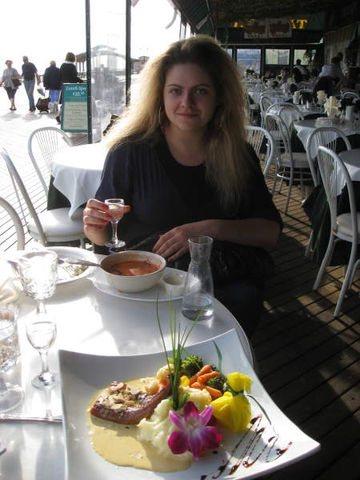
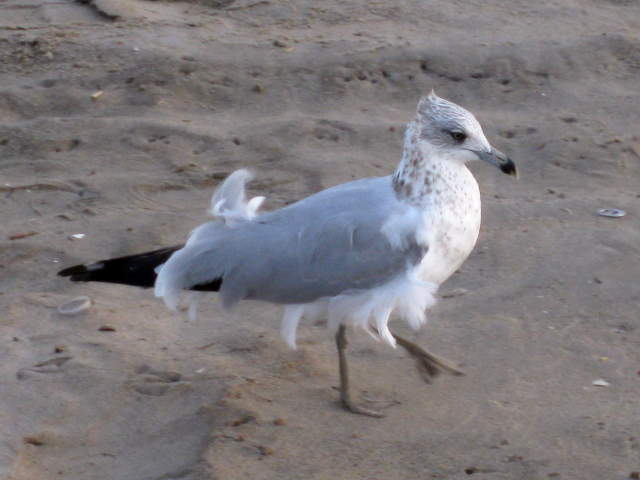

Brooklyn
Why
do I have Brooklyn listed in my Ireland-France vacation photos? I
met up with my Belarusian-American friend Aliona at Brighton Beach in
Brooklyn (she likes places that start with B) and had some authentic
Russian cuisine with her. Here she is eating borscht. We
drank a lot of vodka afterward. I had been preparing for my
upcoming Guinness-fest, so my alcohol tolerance was pretty good.
I thought I kept pace with her, but she probably was being nice
to me.

After dinner, we hung out on the beach for a while before I headed off to the airport. Here's a picture of a seagull.
Back